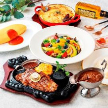
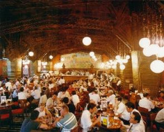
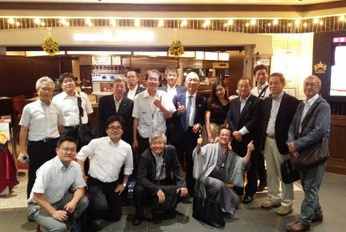

Nr.01
サッポロライオン



ビールといったら、“サッポロビール”♪。
二高といったら“サッポロビール”♪。
いつも二高グルメメンバーが事あるごとにお世話になっています。いつでもどこのお店でも変わらずに、抜群に美味しいビールと料理をいただけます。
また、各店舗の支配人はじめスタッフさんの気配り・ホスピタリティが素晴らしく、お店の作りも、各店工夫されていて、時間が経つのを忘れてしまいます。
恋人と、上司と部下と同僚と、家族と皆で行きたい“サッポロライオン”。
サッポロビールファミリー
- 高24 上條 努
- 高24 酒見 謙三
- 高29 岡崎 康志
- 高33 高橋 毅
- 高41 佐々木 学
- 高53 豊田 崇文